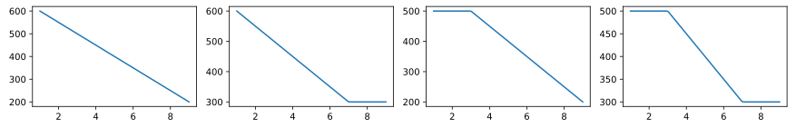
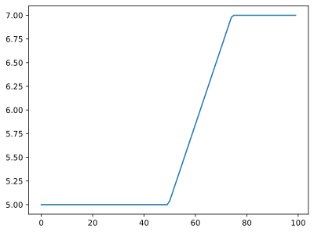
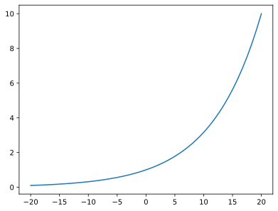

This page was generated from examples/helper-examples.ipynb.
Helper functions
[1]:
import numpy as np
import matplotlib.pyplot as plt
%matplotlib inline
[2]:
import sc3nb as scn
SuperCollider coders are familiar and frequently use a number of useful converter functions
the helper functions provide pythonic pendants namely currently for (to be extended):
linlin(x, x1, x2, y1, y2, clip)
to linearly map x from between [x1, x2] to [y1, y2]
no range check is done, clipping as specified (None, “min”, “max” or anything for “minmax”)
[3]:
xs = np.linspace(1, 9, 100)
plt.figure(figsize=(15,2))
for i, clip in enumerate([None, "min", "max", "minmax"]):
plt.subplot(1, 4, i+1);
plt.plot(xs, scn.linlin(xs, 3, 7, 500, 300, clip))

midicps and cpsmidi
[4]:
scn.midicps(69.2) # convert MIDI note to cycles per second (cps) in [Hz]
[4]:
445.112553732846
[5]:
scn.cpsmidi(440) # and back to MIDI note (in float resolution)
[5]:
69.0
clip(value, minimim, maximum)
[6]:
xs = np.linspace(1,9,100)
plt.plot([scn.clip(x, 5, 7) for x in xs]);

ampdb and dbamp
[7]:
# dbamp(db) converts dB value in amplitude, 0 dB = 1, '*2' \approx +6dB
dbs = np.linspace(-20, 20)
plt.plot(dbs, [scn.dbamp(d) for d in dbs]);
# plt.semilogy()

[8]:
# ampdb(amp) converts an amplitude to dB, assuming 0dB=1
scn.ampdb(0.2)
[8]:
-13.979400086720375
[ ]: